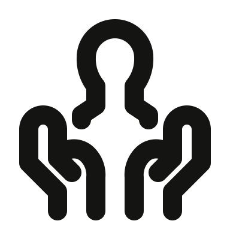
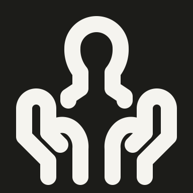

Original → rejected → revised. Worker thuan-mac; author gpt-6. Reviewed at native 48px in light and dark. All revisions use user-authorized drawing-bound exceptions; automatic findings are retained.
1. solo/hands-cradling-continuous-person-bust
OriginalRejected

Revised · light

Revised · dark48px
done · Ready · gpt-6 · pass with exception
The rejected bust is reduced to an omega-shaped head and the hands become closed loops; the reference has a continuous neck/shoulders and open wrists.
Restored the continuous head, neck and shoulders, and two cupped hands with separate thumbs and open wrists.
Exception: The small bust between two recognizable hands needs compact anatomical spacing. Automatic model: invalid; full gate: fail.
The rejected hands are two tall bent bars without thumbs or proper palms; the original shows cupped palms supporting a broad heart.
Restored the heart’s broad lobes and two symmetrical cupped palms with visible thumbs.
Exception: The hand and heart combination retains close supporting contacts while keeping its principal openings readable. Automatic model: invalid; full gate: fail.
The rejected male portrait is a generic detached circle and the hands are hooked blocks; the short-haired continuous male silhouette is missing.
Restored the short-haired head outline, neck, sloping shoulders and open cupped hands.
Exception: The male silhouette and two full hands require compact detail; hair is carried by the outer head shape. Automatic model: invalid; full gate: fail.
The rejected person floats above two closed hand-shaped loops; the source has broad shoulders and long cupped palms with visible thumb creases.
Restored a circular head, broad shoulder arc and two open-wrist supporting hands.
Exception: The supporting thumb/palm contours need closer spacing than unrelated parts, while the head gap remains exactly 4px. Automatic model: invalid; full gate: fail.
The rejected brush has only two thick bristles, a disconnected hand, and a detached cloud instead of cleaning foam.
Restored a hand gripping a broad brush, an even bristle row and a low foam cluster beneath.
Exception: The hand, dense bristle row and foam need compact layered spacing; the brush remains the dominant object. Automatic model: invalid; full gate: fail.
The rejected face omits the round head and places the tongue centrally; the original has a sideways tongue hanging from the right of the grin.
Restored the circular face, smiling eyes, shallow grin and right-side tongue.
Exception: The face boundary and offset tongue preserve the expression; close facial details remain readable. Automatic model: invalid; full gate: fail.
The rejected cowboy avatar uses a polygonal hat and squared hair, losing the curved brim, rounded face and flowing hair.
Restored a broad curved brim, dipped crown, circular jaw and long curved hair on both sides.
Exception: Curved brim, crown and long hair take precedence over rigid keyshape fit; the hat/face silhouette is preserved. Automatic model: invalid; full gate: fail.
The rejected logo replaces the mountain snowline with a detached caret and reduces the ink splash to one flat pedestal.
Restored the mountain peak, connected scalloped snowline and irregular dripping ink silhouette.
Exception: The compact mountain snowline and irregular ink lobes are identifying logo features; their close spacing is retained. Automatic model: invalid; full gate: fail.
The rejected rider is an abstract line on a flat boat, and the breaking wave is only a bump.
Restored the rider’s forward lean and gripping arm, bent legs, sloping jet-ski hull and breaking wave.
Exception: The rider/jet-ski/wave scene needs a compact composition; exact anatomical head gap is retained analytically. Automatic model: invalid; full gate: fail.
The rejected jellyfish are flat mushrooms with two vertical stems, missing their tilt and three trailing tentacles.
Restored three tilted rounded bells, each with three diagonal tentacles, in the original staggered group.
Exception: Three compact jellyfish require close tentacle spacing; the tilted group and individual bells remain distinct. Automatic model: invalid; full gate: fail.
The rejected duplicate jellyfish group also uses horizontal mushroom shapes with only two stems each.
Restored the staggered group of tilted jellyfish with three trailing tentacles each, preserving this icon ID.
Exception: Three compact jellyfish require close tentacle spacing; the tilted group and individual bells remain distinct. Automatic model: invalid; full gate: fail.
The rejected judge is an oval floating inside a plain U-shaped hood, with none of the wig’s curled sides.
Restored a circular face inside a broad domed judicial wig with paired curled side locks.
Exception: The close face and curled wig edges define the judicial portrait; the circular face and outer curls remain clear. Automatic model: invalid; full gate: fail.